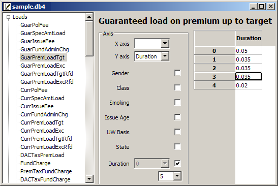
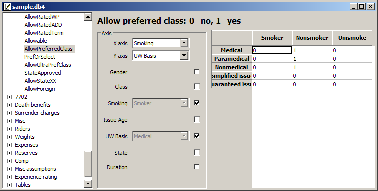
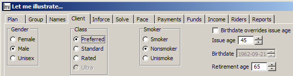
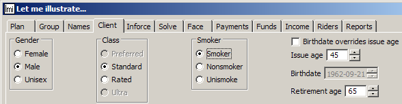

lmi is a free life-insurance illustration system designed to make product implementation quick and easy.
Complicated products like variable UL have many moving parts, but the parts are almost always generic, and the way they work together is essentially identical across the industry. For example, one product’s current policy fee may be higher or lower than another’s. It might vary by duration, or even by issue state. But, even though its value varies, its behavior is standardized: it’s highly likely to be deducted at the beginning of monthiversary processing. Specifying a UL product these days is pretty much a matter of specifying a large but finite set of parameters.
Given that products are parametric variations on a few common themes, how should their differences be expressed in an illustration system? You may have worked with other programs that put product differences into their source code. The drawback is that implementing a new product or updating an old one requires programming. That’s bound to take time and money. Specifications need to be written. Code needs to be tested. Misunderstandings can arise.
lmi, on the other hand, segregates all product differences into external files that you don’t have to be a programmer to change. Its source code doesn’t need to be touched unless a product has some novel feature that hasn’t been programmed yet, and even in that case the feature only has to be coded and tested once. Otherwise, implementing a product is simply a matter of specifying its rates and rules in lmi’s product editor, without modifying the program.
Here’s an example—a guaranteed premium load of 5% in the first year, 3.5% for the next three years, and 2% thereafter:

This particular load applies only up to the target premium. The next parameter in the tree on the left-hand side is the corresponding load on premium in excess of target. These guaranteed parameters have current analogs. There are refundable variants as well, to support products that refund a portion of premium loads upon early surrender.
Some parameters are rates; others are rules. For example, suppose you offer a preferred class only to nonsmokers, and don’t allow it for simplified or guaranteed issue. Here’s how you enter that in the lmi product editor:

[We’ll widen the underwriting-basis field.]
That rule doesn’t just prevent calculating preferred-smoker values. It also controls GUI input. If a user has selected the preferred class for a nonsmoker…

…and then chooses smoker instead…

…then preferred is grayed out, and the class is forced to standard.
Everything that distinguishes one product from another is expressed in external product-database files with a couple hundred editable parameters. Other external files let you extensively customize the layout and contents of input screens and printed reports; documentation for these features will be added later.
lmi has been used in production since 1998 as an illustration system, but it has other uses.
Illustrating a product while it’s being developed. Often it’s useful to see how a sales concept works, without waiting for a vendor or a systems department to implement the product. But profit-testing systems usually provide only rudimentary ledgers. Product-development staff will probably find lmi comfortably similar to their profit-testing software—after all, it was designed by a product-development actuary. They can use lmi to test illustration scenarios at any stage of pricing. Once a product design is final, illustrations can be produced immediately. That’s helpful when agents are clamoring for specimen illustrations before a system is rolled out.
Producing product specifications. lmi’s database files contain all the rates and rules needed for illustrations. These files can be printed as flat text. Using lmi as a specification engine is easier than writing narrative specifications. Parameters are presented in a uniform format, so if you want to see how two similar products differ, you can use a side-by-side file-comparison tool to compare the text output.
Validating another illustration system. We’ve used lmi to test several other systems. Usually, vendors won’t show us their source code, so we send them lmi’s monthly account-value rollforward report for every mismatching test case. That’s easier than going back and forth with hand calculations.
Validating an administration system. Illustration systems typically credit interest as though every month had the same number of days, so they can’t match an administration system’s values exactly. To address that problem, lmi optionally reflects the exact number of days in each month.
Many people at many insurance companies have created ad-hoc systems to fill needs that lmi meets. These systems typically are written in haste, not peer reviewed, not rigorously tested, and often maintainable only by their authors. Why not combine our efforts, so we can all have something better at less cost? Contact the principal author if you’d like to help.
Today, lmi is used in production for numerous general- and separate-account UL products in the BOLI, high net worth, and group UL markets. Naturally, it’s most complete and best tested in the areas where it’s been deployed. But I’ve developed other types of products in prior decades, and have taken care to design lmi for extensibility. For example, changing the program to illustrate an annuity product took only a few days.
Copyright © 2002, 2007, 2008, 2009, 2010, 2011, 2012, 2013, 2014, 2015, 2016, 2017, 2018, 2019, 2020, 2021, 2022 Gregory W. Chicares. This program, including its documentation, is free software. Read the terms under which you can redistribute and modify it.
Maintained by Gregory W. Chicares. The latest version of this file can be found at the lmi website.